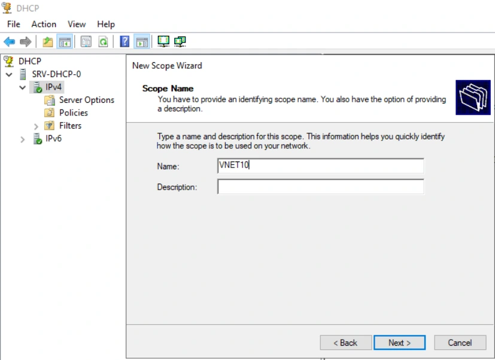
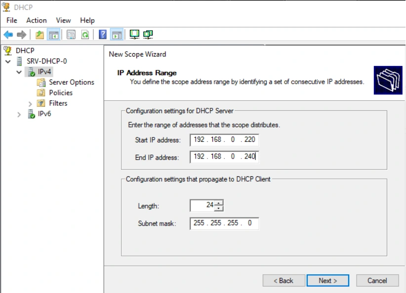
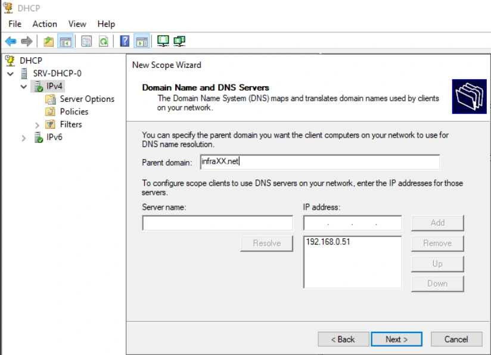

Le support est transcrit et structuré pour la lecture. Les valeurs secrètes et les noms propres au centre de formation sont neutralisés dans les exemples concernés.
Disponibilité du service DHCP
TP du Module 05 – Le service DHCP
Avant de démarrer ce TP, il convient d’avoir suivi les vidéos du module 5 et terminé le TP précédent.
Durée estimée
1 à 2 heures
Énoncé
Prérequis :
Avoir réalisé le TP précédent du Module 05.
Définition des paramètres :
Définir le plan d’adressage et les paramètres pour :
Fournir à vos postes clients des adresses IP dans votre réseau VmNet10.

Visuel isolé — Solution du TP 3 - Disponibilité du service DHCP

Visuel isolé — Solution du TP 3 - Disponibilité du service DHCP
Permettre au serveur du réseau 192.168.1.0/24 de fournir les adresses IP de
votre réseau en cas de défaillance de votre serveur.
o Utiliser la fonction FailOver

Visuel isolé — Solution du TP 3 - Disponibilité du service DHCP
Il faut utiliser la fonction Failover pour partager la zone créée sur le premier serveur DHCP vers le serveur DHCP du second réseau.
Étapes illustrées dans le support
Dans Configure Failover sur l’étendue VNET10 (192.168.0.0), choisir le serveur partenaire.
Dans Add Server, saisir 192.168.1.67 dans This server puis valider.
Étapes illustrées dans le support
Créer la relation de basculement avec le partenaire 192.168.1.67.
L’exemple affiche un délai maximum de prise en charge du client de 1 heure et le mode Load balance. La répartition est de 50 % pour le serveur local et 50 % pour le partenaire.
L’intervalle de basculement et l’authentification des messages sont des options distinctes. Le champ Shared Secret est vide dans la capture. Choisir Next.
Configuration pour les clients du 1er réseau:
Configurer les plages adaptées sur les deux serveurs DHCP. Il faut suivre la procédure indiquée sur la première phase du TP pour créer les plages DHCP.
Configurer le relais DHCP sur le routeur adapté.
Tester le bon fonctionnement.
Si le serveur DHCP du 1er réseau est arrêté.
Le relai DHCP du réseau VNET10 doit renvoyer les requêtes sur le serveur DHCP du réseau vnet11.
Si le serveur DHCP du 1er réseau est relancé.
Le relai DHCP du réseau VNET11 doit renvoyer les requêtes sur le serveur DHCP du réseau
vnet10.
Vérifier la connectivité avec le réseau VmNet10 du VmNet11. Configuration pour les clients du 2ème réseau :
Configurer les plages adaptées sur les deux serveurs DHCP.
Configurer le relais DHCP sur le routeur adapté.
Tester le bon fonctionnement.
Si le serveur DHCP du 2ème réseau est arrêté.
Le relai DHCP du réseau VNET10 doit renvoyer les requêtes sur le serveur DHCP du réseau vnet11.
Si le serveur DHCP du 2ème réseau est relancé.
Le relai DHCP du réseau VNET11 doit renvoyer les requêtes sur le serveur DHCP du réseau vnet10.
Vérifier la connectivité avec le réseau VmNet11 du VmNet10.